Tested claims only
Physically verified on a Stream Deck + XL; other models are simulated against the SDK or listed with their limits. Compatibility
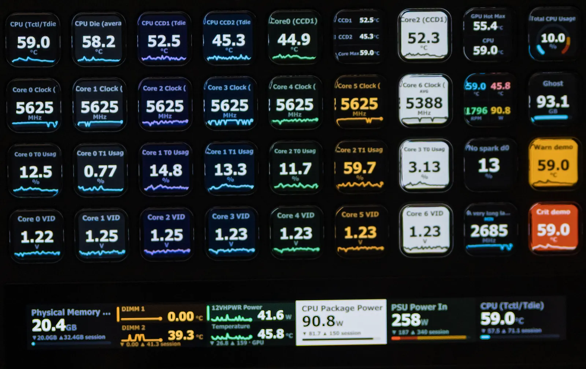
HWiNFO Sensors puts live hardware readings on your Elgato Stream Deck: temperatures, clocks, fans, usage and power, on keys and dials.
Made by Stephen Lawrensen. Free and open source.
Windows 10 or later, x64 · Stream Deck 6.9+ · HWiNFO, free or Pro
Pick a theme to see a real key in it. The warn and critical keys beside it do not change: alert colours are the same on every theme, so an alert never depends on the one you chose.
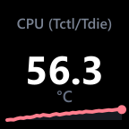
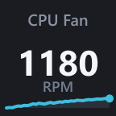
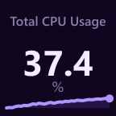
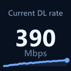
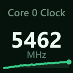
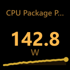
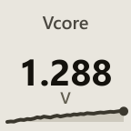
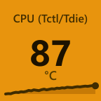
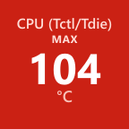
This panel takes its background, text and accent from the pixels of the key you picked. Paper is the light theme, for bright rooms and low vision.
Keys rendered by the plugin with example readings. This page does not read your hardware.
Themes apply per key or to the whole deck.
A single reading carries a sparkline, bar or ring. Stack two, list three as rows, or split four into a grid.
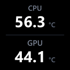
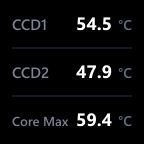
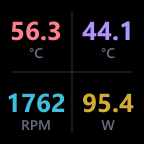
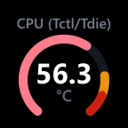
Rotate through readings, push to reset the session min and max, touch to cycle the stat.
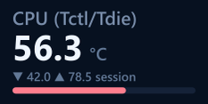
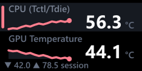
If HWiNFO stops publishing, the key names the problem and the fix within 15 seconds, instead of freezing on an old number. All status screens
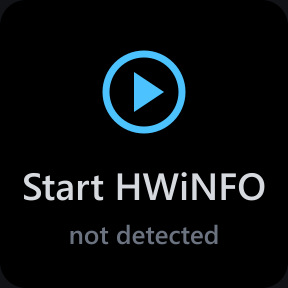
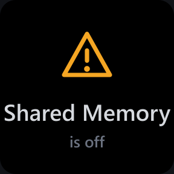
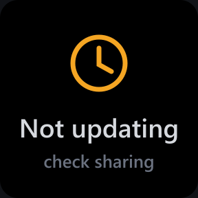
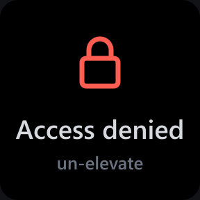
.streamDeckPlugin from GitHub Releases.Free HWiNFO turns Shared Memory off after 12 hours; with Gadget reporting on, the plugin falls back and recovers by itself. HWiNFO is a separate program by REALiX.
Physically verified on a Stream Deck + XL; other models are simulated against the SDK or listed with their limits. Compatibility
548 live readings decode in 8.5 µs on average over 1,000 runs on one machine. PERF.md
No network requests. The plugin's only connection is to the local Stream Deck app. Privacy FAQ
The native bridge is unsigned, so each release publishes SHA-256 hashes. How to verify
Systems engineer. "I build tools I needed and ship them." slawrensen is where they are published; HWiNFO Sensors is the first. I design it, write it, test it on my own hardware and answer its issues.
It is a ground-up TypeScript rewrite on Elgato's official SDK, inspired by shayne's original Go plugin, with no code shared (credits). github.com/slawrensen